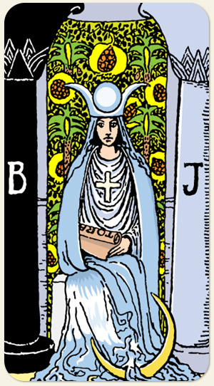

Toda instituição demanda deveres, ritos, compromissos que podem incomodar emocionalmente e energeticamente, gerando a sensação de criatividade reprimida.
Positivo: Pensar com a alma, perceber o que não está explícito, deixar velado o que é importante, período reflexivo, parar e sentar, ouvir o coração, amar com intensidade.
Negativo: Guardar demais, não transparecer sua dor, pessoa reprimida, frigidez, cinismo, falsidade, isolamento, afogar-se em suas próprias emoções, volatilidade, incapacidade de sentir.
Amor e Sexo: pessoa tímida, introvertida, recatada, introspectiva, misteriosa, indiferente, pacata, não se abre, noiva, noviça. Pessoa prometida, estudiosa, inteligente, mas que guarda o que sabe. Dar um gelo, mágoa, ressentimento, dificuldade de se expressar, puritanos, frios, frigidez, baixa libido, impotência sexual, pessoas que fingem prazer sexual.
Trabalho e Dinheiro: Trabalhos que exigem qualificação e diploma. Pessoas devotadas ao trabalho, encontrar sua vocação, benzedeiros, curandeiros, parteiras, altos estudos, conhecimentos de vidas passadas, trabalhos mediúnicos voluntários ou não, perder a fé no trabalho, estar desmotivado, professores, educadores, área do ensino. Ignorar a importância de algo que sabe fazer, o conhecimento que gera dinheiro.
Espiritualidade: Pessoas iniciadas, médiuns, sensitivos, falsos sensitivos, cargos religiosos, silenciar o barulho interno.
Símbolos: Colunas, Banco de Pedra, Véu, Romãs, Folhas de Palma, Pergaminho, Tarot, Lua, Cruz Solar, Coroa de Ísis, Mar.
Elementos: Água e Espírito.